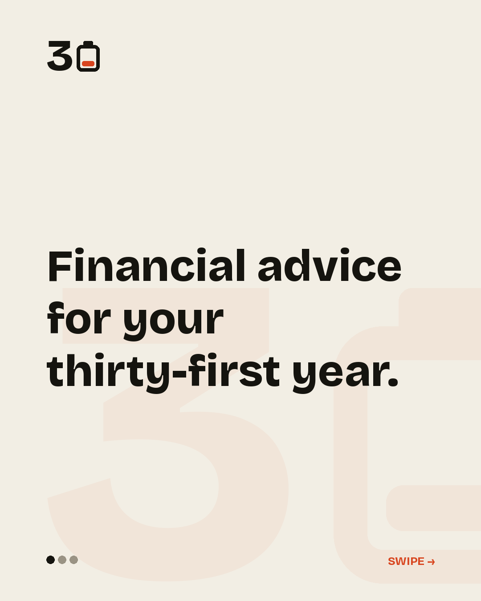
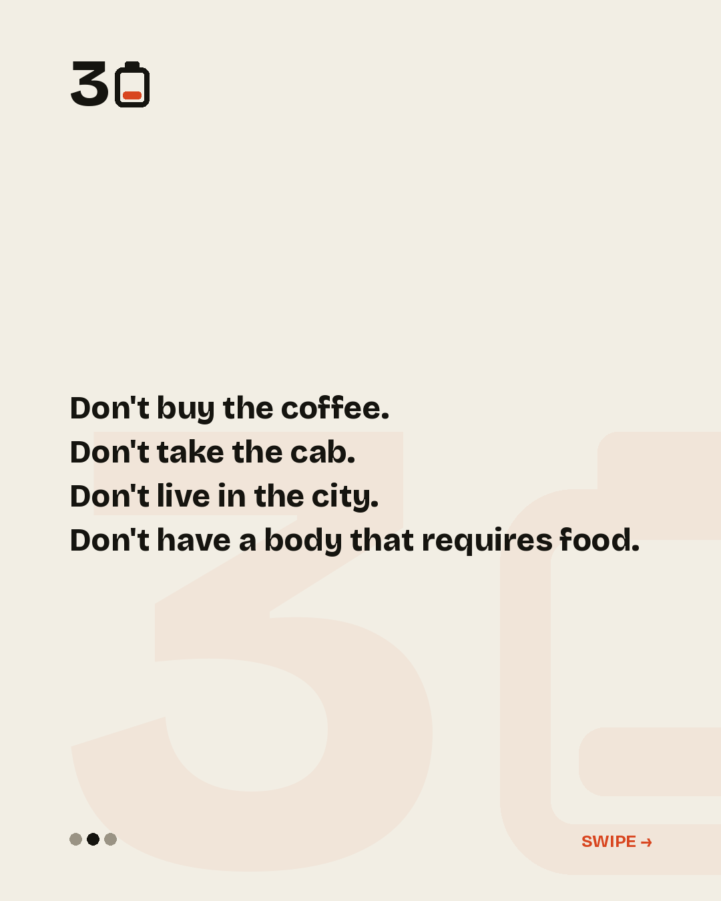
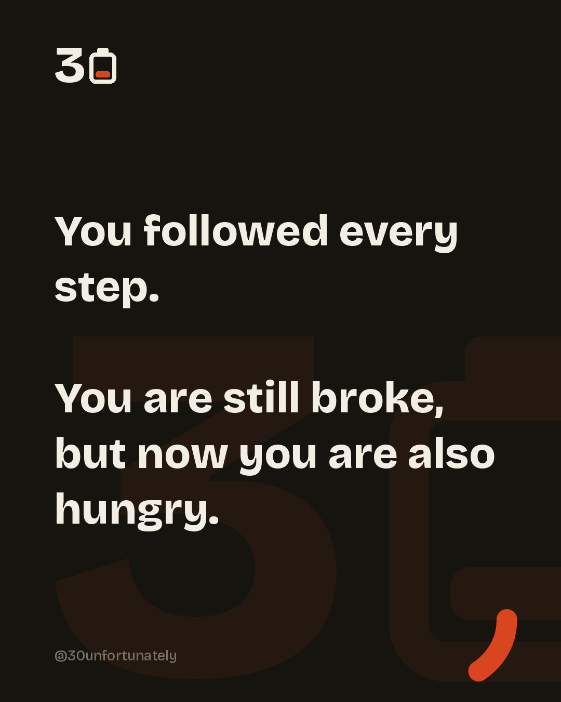

Likes run at 26.8% of reach on carousels against 5.6% on reels, and 1 posts have been saved.
Weekly average reach, by format
14 Sep
21 Sep
28 Sep
5 Oct
12 Oct
reelcarouseltallest 50
Per post
54 posts have a first-day number. Best g011 reached 122, worst g044 reached 3, median 19.
How long reels are watched
Reels are watched 4.6s on average (median 4.0s). Correlation with reach is -0.31 — the reels watched longest reached fewest, because average watch time is per play and a cold audience swipes. Not a target yet.
Today’s candidates
Nothing generated today. The last run was 8 Oct — see it →
Only posts you can still stop or push. 80 already published, skipped or unused are not listed — their numbers are in the charts above, and `publish.py posts` prints them one by one. These files are what Meta pulls at publish time.



g069 · list_collapse · satire 4 The advice industry suggests the solution to high prices is to stop having physical needs.